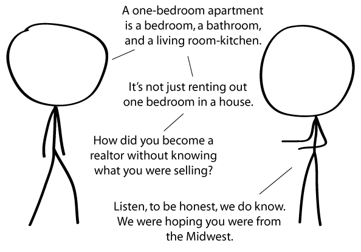

Comic JK 709
When I Feel Like It
⇤
<
?
>
⇥

⇤
<
?
>
⇥
Forum
.
RSS
.
Digg
.
Facebook
.
Reddit
.
Twitter
.
Stumbleupon
Enter your thoughts on number 709 here. Please, no spamming, trolling, phreaking, or engaging in dodgy real estate deals. Errr I am I the only one who thinks there in not a joke in this comic? >No. And I'm from the Midwest. On a farm. Noone sleeps under cows. But we love ponies. >>your IP gave it away. I think this is a dig at realtors? Still, worst comic in a while, and that's saying a lot. > i think this has something to do w/ college people trying to lease a good one bedroom apartment for cheap near campus. Midwest ? erm... Chicago is in the Midwest... so is "sleep under cows" a euphemism used by the likes of Al Capone - akin to "sleep with the fish"... ? or am I reading too much into that... ? >he's calling midwesterners stupid... and you're not helping. >>erm... I'm not American, let alone midwestern... and Americans do have a habit of originating strange slang and euphemisms after all, which is bad... which apparently means good... >>I'm the guy from above. We are not dumb. I don't consider Chicago as in the midwest >>>erm... the US Census Bureau does though... and so do map makers... ( and the Chicago Stock Exchange used to call itself the Midwest Stock Exchange... ) >>>>OK People: Chicago is IN the midwest, but not OF it. What is everyone complaining about? This is hilarious! >Amen. Way back in the day people used to rent out bedrooms like this. > They still do, but they call them "room for rent", not "one room apartment". Your mother has a room which is freely available for dorky college boys.